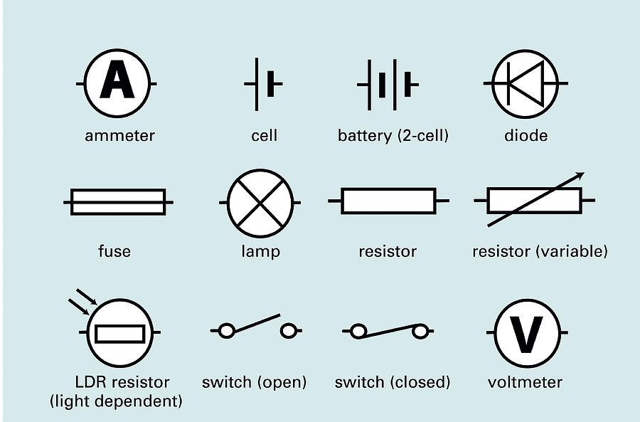

Circuits
Electrical Symbols

Note
- Electrical current only go in the direction of the arrow in a diode
(it also goes in one direction in an LED)
- The longer side of the battery/cell is the positive side of it
Circuit Rules
- Sum of current entering a junction is equal to the sum of current
leaving it
- Voltage in series att up together
- The higher the resistance, the less current pass through the branch
(
V = IR)
- The voltage used in the 2 branches should be the same, the current
may differ according to the resistance
Resistance graphs
Fixed resistor
- The potential difference (voltage) is directly proportional
(straight line) to the current
- It follows Ohm’s law
V = IR because the resistance is
fixed
- Is an Ohmic conductor
Filament bulb
- Not an Ohmic conductor (because not a straight line)
- As current increase resistance increases (it turns into heat and
light)
Semiconductor diode
- Only allows current to flow through at one direction
Graphs

Resistance
|----[Resistor 1]----|
-->---| |--->--
|----[Resistor 2]----|
<-------[Total resistance]-------->
1/(total resistance) = 1/(resistor 1) + 1/(resistor 2)
Power
Power (W) = IV
Back to index page